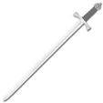
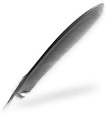
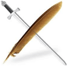
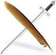

Aran Whitehand
Contents
 This
is a first release, well tested on BGII - SoA (modded and unmodded), but not fully tested on BGII:EE. That means "There
Will Be Bugs(tm)". It has been successfully playtested on BGII - ToB several times in several iterations, but not
completed on BGT or BGII:EE. I hope for only a few minor challenges, but it is likely you will run into something odd!
This
is a first release, well tested on BGII - SoA (modded and unmodded), but not fully tested on BGII:EE. That means "There
Will Be Bugs(tm)". It has been successfully playtested on BGII - ToB several times in several iterations, but not
completed on BGT or BGII:EE. I hope for only a few minor challenges, but it is likely you will run into something odd!
The Mod Concept
NPCs work in many different ways, based primarily on the original BioWare model. What happens, though, if we try a more
'self aware' NPC, allowing player choice for some of the fundamentals? Is an NPC's character his class and stats,
or is it really a personality? Can an NPC still be true to himself, even when a player chooses to turn them into a new class
combination? This mod explores the idea that jobs may come and go, and in the heart of an accountant may lie a lion, even if
the body doesn't quite show it off. The NPC should be able to adapt to being a new class or kit combination, while
retaining his core personality. As a side project, the intent is to post code in the forum to eventually tie to tutorials and
provide insight into the decisionmaking process when turning an idea into functional code.
Aran Whitehand is functionally a Companion mod. He has minor optional quests with a new area, but comes with no special weapons
or upgradeable items - his specialty is in interacting with the members of the party and adapting to situations. For him, the
job is paramount, and his job is supporting the player. He is no stranger to having to carry out orders which bend morality,
though he hates doing so. It should be noted that this mod is designed by adults for adults, and should not be installed unless
you are comfortable with Faerunian swearing, occasional adult themes, and NC - 17 to R rated content in the Romance
portion.
The Companion NPC
Aran Whitehand is a human fighter and scribe for BG2, dual classable, so that he can be Tinker, Tailor, Soldier, Spy...
whatever your party needs. Basically, a human utility player taken along for the friendship/cuddling. "Specials"
include creation of scrolls through dialog and timer when in a party with another canonical mage. Primarily a male friend who
can grow into an extended courtship/romance, romanceable by female PCs, Aran has his own sense of humor and specializes in
bringing others into the conversation.
Statistics
 "Warrior" configuration
[DEFAULT][player options on install, fighter]
17 Strength
16 Dexterity
15 Constitution
12 Intelligence
13 Wisdom
12 Charisma
 "Poet" configuration [player
options on install, for Cleric dual class]
16 Strength
13 Dexterity
15 Constitution
12 Intelligence
17 Wisdom
12 Charisma
 "Thinker"
configuration [player options on install, for Mage dual class]
16 Strength
13 Dexterity
15 Constitution
17 Intelligence
12 Wisdom
12 Charisma
 "Survivor"
configuration [player options on install, for Thief dual class]
16 Strength
17 Dexterity
15 Constitution
13 Intelligence
12 Wisdom
12 Charisma
Friendship
Aran will befriend any protagonist of any race or alignment,though how he reacts to situations will definitely let the
player know how he feels. A rough - around - the - edges man, accustomed to mercenary sevice and caravan work both in front of
and protecting the books, Aran hires on as a scribe or accountant as well as protection. He has learned to work with
practically anyone not Drow, and chase any female within arms reach. His language is rough, his approach unrefined. And if you
don't like it, he will gladly tell you exactly what your opinion is worth.
Romance
Aran will romance any female protagonist of any race save Drow, or any alignment. Again, how he reacts will definitely let
the player understand his position. Good men fall for bad women as quickly as for good ones, and sometimes opposites really do
attract. But romance on the trail is awkward, with a group of adventurers around, and the road to romance is both rocky and
complicated. Exactly how does a strong man feel when his significant other turns out to be infinitely stronger than he, on so
many levels? Can the two of you negotiate the attraction into something of an equal relationship, or is this destined to fail?
For a sample of lovetalks, please visit the forums.
WARNING. FEMALE PC ROMANCE CAN BE "NOT SAFE FOR WORK".
Although your female PC has many opportunities to manage the physical side of the relationship and can always shut him down
or start him up, if a female player character romances him there is specific, detailed, graphic, poorly written fanfic smut
that will make for a workplace conversation that you DO NOT want to have. If you have played Romantic Encounters for BG2, Sheri
and Renal are relatively tame by comparison. YOU HAVE BEEN WARNED. (If you don't want it at all, play him with a male PC,
and all will be completely fine.)
Joining the Party
When Aran Whitehand meets the party, he is looking for work having dropped from the rolls of a mercenary regiment. Look for
him in the new inn "The Broken Sword", found on the Promenade just west of your initial entry into the area from
Chateau Irenicus.
Customization
Portrait choices currently available are here.
Minor Characters
Minor characters and the portraits they use, all commissioned from Peachplums, are
here.
Aran Whitehand is designed for use on BGII - SoA, BGII - ToB, BGT, and BGII:EE.
Windows
This mod is packaged and installed with WeiDU and is distributed as a
self-extracting archive. To install, simply double-click the archive and follow the instructions on screen.
Alternatively, the files can be extracted from the archive using WinRAR. If properly
extracted, you should have an "aranw" folder and the file "setup-aranw.exe" in your game folder. To
install, simply double-click setup-aranw.exe and follow the instructions on screen.
Please run setup-aranw in your game folder to reinstall, uninstall or otherwise change components.
Mac OS X
If the mod was previously installed, uninstall it before extracting the new version. Aran Whitehand is packaged and
installed with WeiDU. To install, simply extract the contents of the mod
into your game folder. If properly extracted, you should have an "aranw" folder, setup-aranw, and setup-aranw.command
in your game folder. To install, simply double-click setup-aranw.command and follow the instructions on
screen.
Linux
Extract the contents of the mod to the folder of the game you wish to modify. Download the latest version of WeiDU for Linux
from WeiDU.org and copy WeiDU
and WeInstall to /usr/bin. Following that, open a terminal and cd to your BG2 installation directory, run 'tolower' and
answer Y to both queries. You can avoid running the second option (linux.ini) if you've already ran it once in the same
directory. To save time, the archive is already tolowered, so there's no need to run the first option (lowercasing file
names) either if you've extracted only this mod since the last time you lower cased file name. If you're unsure,
running tolower and choosing both options is the safe bet. Run WeInstall aranw in your game folder to install
the mod. Then run wine BGMain.exe and start playing.
Component 0 : Install Aran Whitehand
Installs Aran Whitehand on BGII - SoA, BGII - ToB, BGT, or BGII:EE
Player Choices:
1. Set Talk and Flirt Timers : [1] Use Default or [2] Customize
Component 1 : Install Audio
Player Choices:
[1] Install Soundset, Voiced lines, and Music
[2] Install Only Soundset and Music
[3] Install Only Soundset
[4] Do not install any audio
[NOTE: Currently, there are no voiced lines, so installing 1 or 2 above gives you everything currently enabled.]
Component 2 : Aran Configuration
Player Choices:
[1] Aran Whitehand, default configuration (Soldier) or one of four customizations.
[2] Aran Whitehand, Mage Dual-Class stats configuration (Tinker)
[3] Aran Whitehand, Cleric Dual-Class stats configuration (Tailor)
[4] Aran Whitehand, Fighter stats configuration (Soldier)
[5] Aran Whitehand, Thief Dual-Class stats configuration (Spy)
If you choose to customize, you can set the following:
- modify starting Aran to be poor, average, or rich
- see his current proficiencies and adjust his carried equipment
- choose what armor he comes with
Component 3 : Alternate portraits
Portrait choices currently available are
here.
AranAware
AranAware can be found [NOT YET AVAILABLE]. It is designed to be run after both Aran Whitehand and other mods, much like
Crossmod. While many "awareness" comments and dialogs are already enabled passively within the central mod, there are
cross-mod materials that need adjustment. This add-on should be run after most mods on your install. It only enables
content/manipulates Aran's own scripts and files, so should cause no troubles with other mods. Currently, it recognises and
enables the following content:
{Insert Aran Aware materials rundown here}
The philosophy driving coding in this project is to preserve technical operating compatibility with as wide a range of other
mods as possible. I leave it up to the player to define 'conceptual incompatibility' - there are so many mods out there
now that I think players have the right to choose to add, subtract, or modify within their games without me making those
decisions up front. Hey, I am a hobbyist, not a professional - if you want professional stuff, go buy it! Some of the things
done to support this are listed here:
- {add text here explaining technical compatability}
- Hang around the Broken Sword for awhile, and you'll find table chatter. The non-joinable NPCs there have some
conversations, too. Look for additional content there in later releases.
- Kick him out and take him back in in different ways, in different areas.
- Have a sparring session with him, friend or not, romance or not. All are different, and take advantage of RandomNumber
generation, so... expect things to be different every playthrough.
- Ask him for advice in different areas.
- Get him drunk. Several times.
- Charm him, and chat...
- Romance: Play an evil female PC and treat him badly... scratch him, bite him, and see what he does.
- Romance: Get into an argument with him, and wen he comes looking to make up, refuse. Or you could try apologising.
Sometimes he actually accepts.
- Romance: The naughty bits are rather varied and exhaustive. Or at least they try to be. Encourage him, don't
encourage him, make him work for it... play however you like.
- Install AranW_Aware after all other NPC mods and Divine Remix, and he will banter with mod added NPCs.
- Play him on BGII:EE. He has content and banters with the BeamHaul crowd, too.
The current list of folks who have contributed and I wish to thank is on Aran's forum... or it will be once I have
gotten that organized
There is an entire community of folks to thank, for all sorts of reasons, so someone is going to get left out and I am going
to be very embarrassed. But the folks who really make things fun when working through i.e. stuff, the folks who assisted in
proofreading, giving critical feedback, and sending those PMs and messages saying "YES!" or "NOOOOO!!!!!!"
are all part of this mod. The good parts. The bad parts are all mine.
First off, Domi is a goddess whose work with Dynaheir in BG1NPC originally inspired me to get off of my lazy behind and
actually become involved in modding. I thank her, curse her, swear at her, and then swear by her, all usually within the same
20 minutes. Thanks to CamDawg, Grim Squeaker, Smoketest, devSin, Wisp, Taimon, Ascension64, igi, eric, Steve, and Miloch, who
all show me how things work and manage not to call me an ignorant jackass to my face (mostly). And infinite thanks to Nythrun,
who showed me patience, great humor, and the power of "just do it."
And though he will make an obscene comment or involve Aran in a Dodecahedron mod in retaliation, special thanks to "the
bigg". Not just for years of patience and help, but for continuing to support, clean up, extend, and rebuild Weimer's
Dialog Utility making it relevant and powerful for today's modders.
On this specific project, huge thanks go to Berelinde, who has helped me bounce ideas, clean up/rebuild code, warned me when
I was getting really gross, poked at me when I slacked, asked the "duh" questions that have set me on new paths,
reminded me when I have started doing boneheaded things in code, and provided solid criticism. Jastey has been there regularly,
giving great specific feedback; without these two strong modders as friends, working on and discussing things at Tolkein Across
The Water, the biggest challenges in the mod would never have been attempted, let alone written. To the Two Mistresses of
Modding Mayhem, I tip my cap in appreciation, and let you know that you have helped me get hours of enjoyment out of the
modding challenge. It is great to work with you!
Special thanks to Peachplums for her donated artwork - check her out at http://peachplums.deviantart.com/ and follow her
work!
Lots of people have helped out in this "open code" mod experiment, many with behind-the-scenes PMs that have
opened new ideas or closed up old ones, others with clear and helpful bug and typo hunting, and still others with the ticklish
and sensitive "proofread the smut" quotient. My appreciation is fierce. In most cases, my thanks has been to write
specific pathways or open branches in response to their own particular personal protagonist preference (their "ppp"),
but some angels have given feedback without indicating what they like in their ppp, so the only coin I have in repayent is
acknowledgement of contribution. A partial list follows:
- PeachPlums
- RavenBlack
- Ipsy
- Nix
- KIrving
- Ajnos
- KathStoneDog
- McMazey
- Jessception
- Aeryn
- Luridel
- Ardanis
- Miloch
- Wisp
- devSin
- the bigg
- K'aeloree
- Marla Wolfblade
- erik
- Igneous
- Kessi
- yarpen
- Autumn Bard
- Ericp07
- Mike1072
- igi
- Nythrun
- Shaitan
- plainab
- Domi
- NOTE TO SELF: RECHECK PMS AND POSTS FOR CONTRIBUTORS!!! And for folks who would rather remain anonymous.
This project has been a blast, even on days when I just wanted to throw it all in and go whack something in Mount &
Blade or take over the world in Civ III/IV/BTS/V/GK (the project took that long!!). That is entirely due to folks poking at
Aran with long sticks, asking questions, giving feedback, and making me rethink things.
Musical Themes Used
JSayles Early Music - "All MP3 recordings listed below,
may be downloaded and distributed free of charge. The recordings may be used for any purpose whatsoever. In fact, that's
the only reason I'm doing this to promote Early Music, and especially to promote the musical selections recorded
below." - J. Sayles, performer
- aranw/media/wavc/set2_1_orosetta.wav /* 1 friend, upbeat */
- aranw/media/wavc/set2_2_praetorius.wav /* 2 friend, introspective */
- aranw/media/wavc/set2_3_sweetnymphcometothylover.wav /* 3 love, upbeat */
- aranw/media/wavc/set2_4_aprilinmistressface.wav /* 4 love, introspective */
- aranw/media/wavc/set2_5_riuriuchiu.wav /* 5 drunk or in an inn, fast */
- aranw/media/wavc/set2_6_comeagain.wav /* 6 inn, introspective */
Vox Vulgaris - middle ages with a twist. Source - The group. Selections clipped from three of their online materials,
Cantiga 166, Rokatanc, and Saltarello. Pieces are in public domain, but the performance is copyrighted - probably shorter than
the "you are stealing this" time index, but if an official someone objects for use in a free mod, I'll just use
it on my own install. I have to thank the husband and wife team that developed mount & Blade, because I didn't know
there was such great midaevil re-covers from groups like Vox Vulgaris and Hungary Debrecen, until modders put them into their
M&B mods!
- aranw/media/wavc/set3_1_vox_vulgaris_rokatanc.wav /* 1 friend, upbeat */
- aranw/media/wavc/set3_2_vox_vulgaris_rokatanc.wav /* 2 friend, introspective */
- aranw/media/wavc/set3_3_vox_vulgaris_cantiga_166.wav /* 3 love, upbeat */
- aranw/media/wavc/set3_3_vox_vulgaris_cantiga_166.wav /* 4 love, introspective */
- aranw/media/wavc/set2_5_riuriuchiu.wav /* 5 drunk or in an inn, fast */
- aranw/media/wavc/set3_6_vox_vulgaris_saltarello.wav /* 6 inn, introspective */
Brass ensemble, Suzato, The Danseyre. Renaissance, done in a brass arrangement. Czech Brass. Source - Czech Brass album
"Virtuosi Baroque Music", on the Sonnleitner Verlag label. Copyrighted, so if someone objects to the rip for a free
mod, I'll take it out. But if you find one of their recordings, they are solid brass, more calm in their interpretations
that the Philip Jones Brass Ensemble or Canadian Brass.
- aranw/media/wavc/set1_1_suzato_danserye_mourisque.wav /* 1 friend, upbeat */
- aranw/media/wavc/set1_2_suzato_danserye_battaille.wav /* 2 friend, introspective */
- aranw/media/wavc/set1_3_suzato_danserye_bransle.wav /* 3 love, upbeat */
- aranw/media/wavc/set1_4_suzato_danserye_monamy.wav /* 4 love, introspective */
- aranw/media/wavc/set1_5_praetorius_volte.wav /* 5 drunk or in an inn, fast */
- aranw/media/wavc/set2_6_comeagain.wav /* 6 inn, introspective */
This mod is not developed, supported, or endorsed by BioWare" BeamDog", Overhaul", or
Interplay/BlackIsle". It is not released under any license at all, because it is a EULA-breaking Law-shirking Free Random
Expression Of Fun(tm), and the only "license" it could fit under is probably not enforceable in any way shape or
form. I hereby grant anyone the freedom to do anything they want with it. If you rip off large parts of it, contact Aran
Sorkin, Joss Whedon, and any number of other sci-fi and fantasy authors and pay them, because any good stuff in here is
probably rephrases of their work that have been floating about in my brain for years, only "Forgotten Reams-Ized". If
there are any copyright issues or this statement needs revision then please contact me and advise me what to do about it. This
mod was created to be freely enjoyed, mercilessly hated, or stalwortly ignored by all Baldur's Gate II players. If you are
looking to make a buck or two off of it, you really have not played the mod. I'd advise you to do so, especially the
naughty bits, because that will kill any ideas you had about actually, you know... profiting :) .
Version 1 - November, 2013